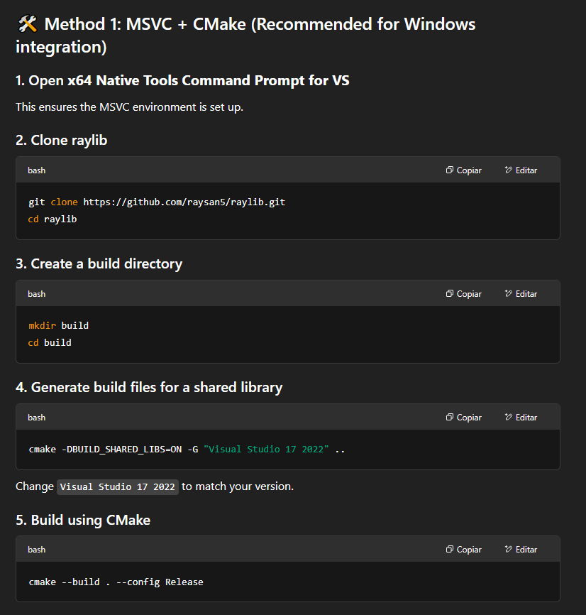

Building
-
Regardless of build option, I use my clone of RayLib in C.
-
I don't use anything from the RaylibOdin repo.
Static
-
cd src -
make -
Edit settings in
src/Makefileto configure. -
By default it generates
libraylib.a(STATIC LIB). To generate a.dllchange the Makefile configs.
Dynamic
-
 .
-
I already did steps 2 to 4, now I just repeat step 5 every time.
-
The files are in
\RayLib\build\RayLib\Release. -
From what I tested:
-
The dll and lib must be in
C:\odin\vendor\RayLib\windows. -
The dll must be in
Floresta Mistica - Odin\client_side.
-
-
-
"this would only affect windows builds for my game? If I want the change to work for all platforms, then I need to compile RayLib for every platform?"
-
"Yes".
-
Frame Control
-
Example .
-
By default,
EndDrawing()calls the following processes:-
Draw remaining batch data:
DrawRenderBatchActive() -
SwapScreenBuffer()-
"Swap back buffer with front buffer (screen drawing)".
-
It is platform dependent.
-
-
Frame time control:
WaitTime() -
PollInputEvents()
-
-
To avoid steps 2, 3 and 4, flag
SUPPORT_CUSTOM_FRAME_CONTROLcan be enabled inconfig.h(it requires recompiling RayLib). This way those steps are up to the user. -
Note that enabling this flag invalidates some functions:
-
GetFrameTime(). -
SetTargetFPS(). -
GetFPS().
-
PollInputEvents
-
How it works :
-
As I understand and based on tests:
-
(2025-05-28) Windows x64:
-
The OS does not know the concept of "pressed" and "released". That is built by RayLib/GLFW.
-
A simple comparison is done: "if the previous state was not DOWN in my array and now the OS reports it as DOWN, then it will be marked as PRESSED in my array".
-
-
I tested for both Key inputs and Mouse inputs; the explanation applies to both.
-
-
-
Ex :
-
If the poll is done every 5 seconds and I press a key at 2.5s, then when polling occurs it will be detected that the key was JUST PRESSED, even though 2.5s have already passed.
-
The same applies to released.
-
-
-